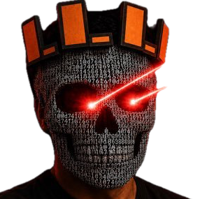

Permissioned public study · Build 14.5.0
One portrait.
1,179,648 Gaussians.
Deepstar turns Dimitri’s single 2D self-portrait into a metric 3D Gaussian scene using Apple SHARP. Drag the result for nearby views, scroll to zoom, or reset to the source camera.
InputOne RGB image
Output63 MB Gaussian PLY
RuntimeLocal Apple silicon

Loading 1,179,648 splats63 MB · rendered locally in your browser
Preparing renderer…Drag · scroll · double-click reset